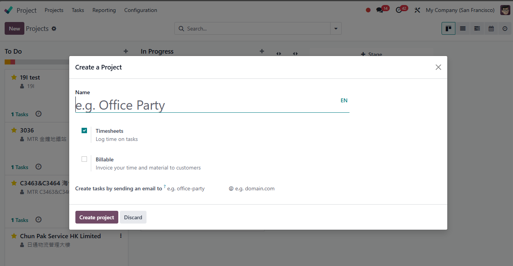
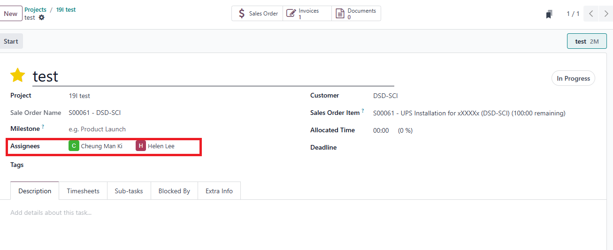
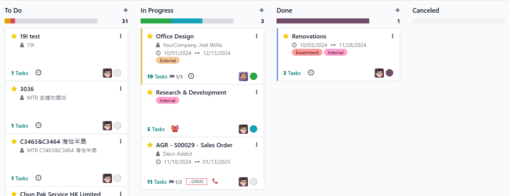
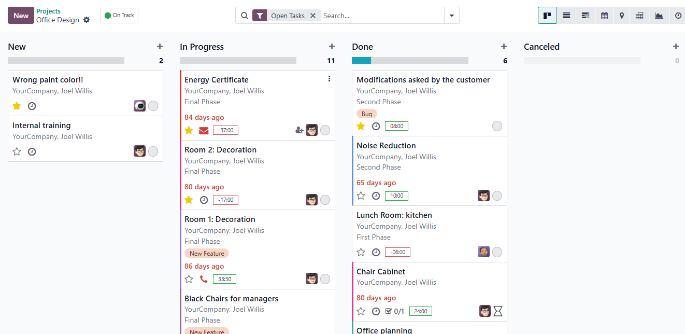

USC Odoo User Guide - Project Management¶
Overview¶
Project management in Odoo is an integral part of executing sales orders, especially for service-based products and projects requiring milestone-based invoicing. This guide covers both automatic and manual project creation, task management, and best practices for ensuring accurate timesheet tracking and cost calculation.
Prerequisite¶
Before managing projects, make sure you have completed the following steps:
Also, ensure you are logged into the Odoo system:
Project Creation Methods¶
1. Automatic Project Creation¶
Projects can be created automatically when specific products in the sales order are configured with:
- Project Template: Odoo will generate a new project based on the selected template.
- Task Template: Tasks will be pre-created within the project according to the task template settings and the product line will become the task title.

2. Manual Project Creation¶
If a project is not automatically created, you can manually create one by:
- Navigating to the Project Module:
- Click Create to start a new project.
- Fill in all necessary project details, including Customer, Project Name, and Expected Start and End Dates.
- Add Tasks Manually: You can manually add tasks as needed, defining the scope and responsibilities.
- Bind to SO: Bind the project to the related Sales Order (SO) for accurate project and financial tracking.

Task Management¶
-
Assign Workers to Tasks
- Assign responsible workers to tasks to enable timesheet logging and accurate cost calculation.
- Ensure each task has clear start and end dates.
-
Complete Tasks
- Move tasks to the Completed stage once they are done.
- This updates the project progress and prepares for potential milestone invoicing.
-
Plan Dates Effectively
- Always fill in the Planned Start and Planned End dates to ensure project timelines are tracked properly.

Task Assignee

Project Status

Task Status
Timesheet Tracking and Cost Calculation¶
- Timesheet Entry: Workers assigned to tasks can log their work hours directly through the WeChat Mini App module timesheet module (available shortly).
- Cost Calculation: The timesheet data integrates with project costs, allowing accurate labor cost reporting.
Best Practices¶
- Utilize Project and Task Templates: Automate repetitive tasks and standardize project setups.
- Regularly Update Task Status: Keep task progress up to date to avoid project delays.
- Monitor Timesheet Accuracy: Review timesheets regularly to ensure correct cost allocations.
Troubleshooting¶
1. Project Not Created Automatically¶
- Check Product Settings: Ensure the product in the sales order is linked to a project and task template.
- Manually Create Project: Follow the manual creation steps if automation fails.
2. Task Status Not Updating¶
- Review Task Assignments: Make sure the assigned worker is updating the task status.
- Check Permissions: Ensure workers have the correct permissions to modify task statuses.
IT Support Contact¶
- Email: ericmok@uscpower.net
- Phone: +852 6622 7663